5. Použitie stromov¶
Na minulej prednáške sme naprogramovali triedu BinarnyStrom, ktorá vďaka niekoľkým šikovným metódam zvláda zostrojovať binárne stromy aj s veľa tisícmi vrcholov. Pritom v každom vrchole môže byť ľubovoľná hodnota, nielen číselná, ale aj reťazcová, prípadne by tu mohli byť aj zložitejšie dáta. Trieda BinarnyStrom z predchádzajúcej prednášky:
import random
class BinarnyStrom:
class Vrchol:
def __init__(self, data, left=None, right=None):
self.data, self.left, self.right = data, left, right
def __init__(self, postupnost=None):
self.root = None
for hodnota in postupnost or []:
self.pridaj_vrchol(hodnota)
def pridaj_vrchol(self, hodnota):
if self.root is None:
self.root = self.Vrchol(hodnota)
else:
vrch = self.root
while True:
if random.randrange(2):
if vrch.left is None:
vrch.left = self.Vrchol(hodnota)
return
vrch = vrch.left
else:
if vrch.right is None:
vrch.right = self.Vrchol(hodnota)
return
vrch = vrch.right
def __len__(self):
def rek(vrch):
if vrch is None:
return 0
return 1 + rek(vrch.left) + rek(vrch.right)
return rek(self.root)
def vyska(self):
def rek(vrch):
if vrch is None:
return -1
return 1 + max(rek(vrch.left), rek(vrch.right))
return rek(self.root)
def __contains__(self, hodnota):
def rek(vrch):
if vrch is None:
return False
return vrch.data == hodnota or rek(vrch.left) or rek(vrch.right)
return rek(self.root)
Pomocou takto definovanej dátovej štruktúry môžeme teda vytvoriť ľubovoľne veľký strom, napríklad:
>>> s = BinarnyStrom(random.randrange(10000) for i in range(10000))
>>> s.vyska()
17
>>> 5000 in s
False
V tomto strome sa nachádzajú náhodné čísla z intervalu <0, 9999> a aby sme zistili, či sa v ňom nachádza nejaká konkrétna hodnota, musíme postupne (teda rekurzívne) preliezť často celý strom, teda všetkých 10000 vrcholov.
Binárny vyhľadávací strom¶
Pozrime sa ale na takýto binárny strom, ktorý obsahuje 14 vrcholov a jeho výška je 5:
{kind=link}
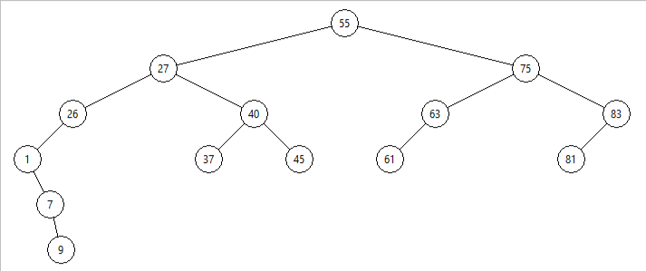
Skúsme popísať akú vlastnosť majú hodnoty vo vrcholoch tohoto konkrétneho stromu:
vo všetkých vrcholoch sú rôzne hodnoty - sú to nejaké celé čísla
v koreni stromu je číslo
55v ľavom podstrome sú všetky hodnoty menšie ako
55v pravom podstrome sú všetky hodnoty väčšie ako
55
{kind=link}
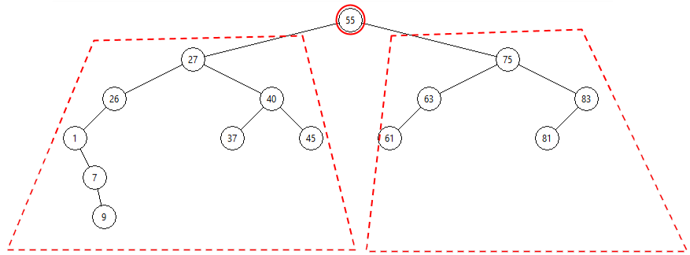
teda, ak budeme v tomto strome hľadať nejakú hodnotu, nemusíme pritom prechádzať celý strom, ale len polovicu, podľa toho, či je hľadaná hodnota menšia ako číslo v koreni alebo väčšia
Predpokladajme, že hľadáme číslo 35 - zrejme stačí pozerať ľavý podstrom (tu je jeho koreň 27):
{kind=link}
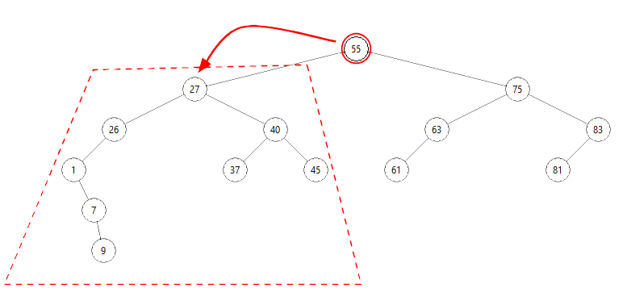
Ak by aj tento náš podstrom mal túto istú vlastnosť (vľavo sú len menšie ako 27 a vpravo len väčšie ako 27), nemuseli by sme preliezať celý tento podstrom, ale stačilo by len tú časť, ktorú zistíme po porovnaní s koreňom: keďže hľadané je 35 a to je väčšie ako koreň podstromu 27, stačí túto hodnotu hľadať v pravom podstrome od vrcholu 27:
{kind=link}
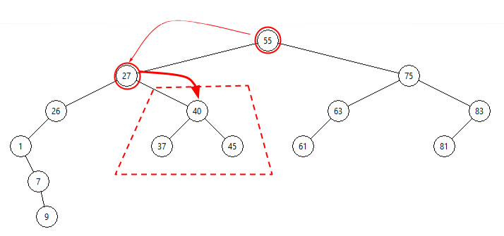
Keďže tento ukážkový strom je skonštruovaný tak, že vlastnosť „naľavo menšie a napravo väčšie“ platí pre každý vrchol stromu, môžeme pokračovať:
{kind=link}
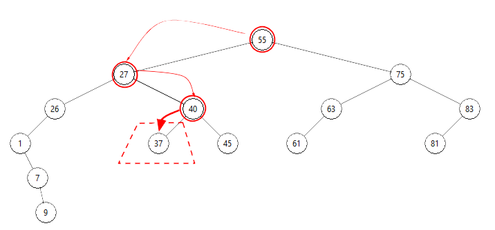
Po štvrtom porovnaní môžeme vidieť, že hľadaná hodnota 35 sa v tomto strome nenachádza:
{kind=link}
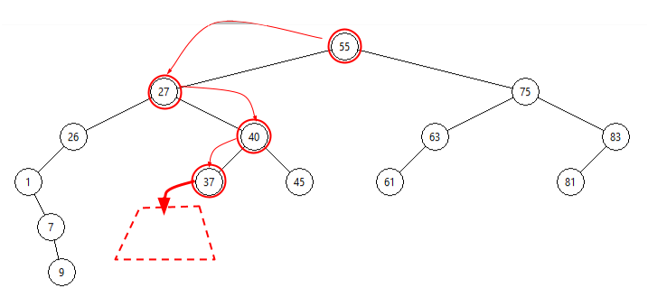
Hľadanie v takomto strome zapíšeme takto:
do
vrchdaj koreň stromuak je hodnota vo
vrchzhodná s hľadanou hodnotou, môžeš skončiť (našiel)ak je hodnota vo
vrchväčšia ako hľadaná, bude treba pokračovať v ľavom podstrome, teda zmeňvrchna ľavý podstrominak sa hľadaná hodnota nachádza v pravom podstrome, teda zmeň
vrchna pravý podstromak
vrchnie jeNonepokračuj od kroku (2), inak skonči (nenašiel)
Tento algoritmus je zaujímavý tým, že
nie je rekurzívny
opakuje sa v ňom nejaká časť: kým nenájdeme hľadanú hodnotu, alebo neprídeme do listu stromu
teda netreba hľadanú hodnotu porovnávať so všetkými hodnotami stromu, ale len s hodnotami na nejakej ceste smerom k listom stromu
maximálny počet porovnaní (prechodov cyklu) bude teda závisieť od výšky stromu, čo je v našom prípade 5
Binárny strom, ktorý má vlastnosť, že pre každý vrchol stromu platí
všetky vrcholy v ľavom podstrome sú menšie ako hodnota v koreni
všetky vrcholy v pravom podstrome sú väčšie ako hodnota v koreni
sa nazýva binárny vyhľadávací strom.
Zapíšme základ definície triedy BVS, ktorá bude mať zatiaľ jedinú metódu na hľadanie hodnoty v strome:
class BVS:
class Vrchol:
def __init__(self, data, left=None, right=None):
self.data, self.left, self.right = data, left, right
def __init__(self):
self.root = None
def hladaj(self, hodnota):
vrch = self.root
while vrch is not None:
if vrch.data == hodnota:
return True
if vrch.data > hodnota:
vrch = vrch.left
else:
vrch = vrch.right
return False
Môžete vidieť, že táto nerekurzívna metóda hladaj() je veľmi jednoduchá a preto dobre čitateľná. Horšie je, že zatiaľ to nevieme otestovať, lebo nevieme nejako jednoducho skonštruovať binárny strom, ktorý by mal vlastnosť BVS.
Vytvorme najprv BVS, priamym priradením vrcholov do root, napríklad takto:
v = BVS.Vrchol
s = BVS()
s.root = v(30, v(10, v(3), v(12, v(11), v(17))), v(35, v(32, None, v(34)), v(36)))
Zápis v = BVS.Vrchol tu označuje to, že si vyrobíme skratku v pre volanie BVS.Vrchol. Takto vytvorený strom má tento tvar:
{kind=link}
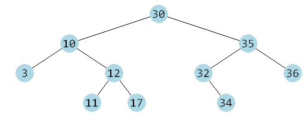
Vidíme, že naozaj každý vrchol stromu spĺňa podmienku BVS. Môžeme otestovať:
>>> s.hladaj(15)
False
>>> s.hladaj(17)
True
>>> s.hladaj(30)
True
>>> s.hladaj(35)
True
>>> s.hladaj(33)
False
Teraz sa zamyslime nad tým, ako môžeme zautomatizovať vytváranie BVS. Predpokladajme, že už máme nejaký BVS a chceme do neho pridať nový vrchol, ale tak, aby aj tento nový strom bol BVS - teda chceme, aby sa nepokazila vlastnosť BVS. Ak by sme chceli do nášho malého ukážkového stromu pridať, napríklad hodnotu 7 a všetky existujúce vrcholy chceme pritom nechať na svojom mieste, budeme hľadať (podobne ako metóda hladaj()) miesto, kde by sme očakávali umiestnenie takejto hodnoty:
keďže
7nie je v koreni stromu, budeme pokračovať vľavo, lebo7je menšie ako30tu má ľavý podstrom svoj koreň
10, čo je opäť viac ako7, preto sa opäť presúvame vľavoľavý podstrom vrcholu
10je strom s koreňom3(ten je už bez potomkov) - keďže3je menej ako7, pridávaná hodnota bude ležať v pravom podstrome3keďže pravý podstrom vrcholu
3neexistuje, tu je presne to miesto, kde by sme mohli pripojiť nový vrchol s hodnotou7
Zapíšme tento postup do algoritmu:
ak koreň neexistuje, vyrobí sa nový koreň s vkladanou hodnotou
inak označme koreň stromu ako
vrcha hľadajme miesto na pridanie nového vrcholuskontrolujme, či pridávaná hodnota sa nenachádza v koreni, teda
vrch.data, ak áno, skončíme (nebolo treba pridávať)ak je pridávaná hodnota menšia ako hodnota v koreni, budeme kontrolovať ľavý smer:
ak ľavý potomok vrcholu
vrchneexistuje, na toto miesto vytvoríme nový vrchol a skončímeinak zmeníme
vrchna ľavý podstrom a pokračujeme v (3)
pridávaná hodnota je väčšia ako hodnota v koreni, preto budeme kontrolovať pravý smer:
ak pravý potomok vrcholu
vrchneexistuje, na toto miesto vytvoríme nový vrchol a skončímeinak zmeníme
vrchna pravý podstrom a pokračujeme v (3)
V strome to bude vyzerať takto:
{kind=link}
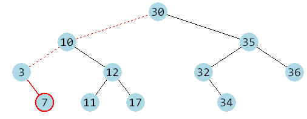
Podobne ako metóda hladaj() aj táto je nerekurzívna:
class BVS:
...
def vloz(self, hodnota):
if self.root is None:
self.root = self.Vrchol(hodnota)
else:
vrch = self.root
while vrch.data != hodnota:
if vrch.data > hodnota:
if vrch.left is None:
vrch.left = self.Vrchol(hodnota)
return
vrch = vrch.left
else:
if vrch.right is None:
vrch.right = self.Vrchol(hodnota)
return
vrch = vrch.right
Porovnajte túto metódu s podobnou v pôvodnom binárnom strome, ktorá pridávala nové vrcholy na náhodné pozície v strome. Môžete vidieť, že tieto dve funkcie sa líšia len v dvoch riadkoch:
class BinarnyStrom:
...
def pridaj_vrchol(self, hodnota):
if self.root is None:
self.root = self.Vrchol(hodnota)
else:
vrch = self.root
while True:
if random.randrange(2):
if vrch.left is None:
vrch.left = self.Vrchol(hodnota)
return
vrch = vrch.left
else:
if vrch.right is None:
vrch.right = self.Vrchol(hodnota)
return
vrch = vrch.right
Pomocou tejto metódy môžeme BVS z predchádzajúceho príkladu vytvoriť, napríklad takto:
s = BVS()
for i in 30, 10, 35, 3, 12, 32, 36, 11, 17, 34:
s.vloz(i)
Užitočné vlastnosti BVS
inorder postupnosť je vždy vzostupne utriedená postupnosť všetkých hodnôt v strome
preorder postupnosť jednoznačne určuje tvar BVS - ak vytvoríme nový strom s vkladaním prvkov v poradí preorder postupnosti, dostávame identický strom
minimálny prvok je najľavejší v celom strome, t.j. ak pôjdeme od koreňa po ľavých potomkoch, tak posledný v trase je minimálny prvok
maximálny prvok je najpravejší v celom strome, t.j. ak pôjdeme od koreňa po pravých potomkoch, tak posledný v trase je maximálny prvok
ľubovoľný prvok v strome sa dá nájsť za maximálne toľko krokov, ako je výška stromu
Degenerovaný BVS
Ak by sme vytvárali BVS z utriedenej postupnosti (postupným volaním metódy vloz()), dostávame strom, ktorý obsahuje, napríklad len pravých potomkov (ľavé podstromy sú prázdne). Binárny strom sa takto zdegeneroval na spájaný zoznam - výška stromu je vlastne počet prvkov mínus 1 - v takomto strome potom hľadanie prvku prechádza celý strom. Degenerovaným stromom pomenujeme aj také BVS, ktoré majú veľkú výšku, napríklad n/2 kde n je počet prvkov stromu.
Ideálne by bolo, keby bol BVS skoro úplný, v ktorom väčšina listov má rovnakú hĺbku (rovnajúcu sa výške stromu). Vtedy je vyhľadávanie prvku veľmi rýchle a netreba na neho viac porovnaní ako je výška stromu, čo je pre skoro úplný strom približne log2 n. Vyrobiť takýto skoro úplný strom je ale už náročnejšia práca.
Vyhodenie vrcholu zo stromu¶
Ďalej budeme uvažovať o vyhadzovaní vrcholu BVS tak, aby pre tento strom stále zostala vlastnosť BVS a pritom sme ho nemuseli celý prerábať.
Základnou ideou je zjednodušene toto:
nájdeme vyhadzovaný vrchol a ak je to list (nemá potomkov), jednoducho ho vyhodíme (nahradíme
None)ak je to vnútorný vrchol s jediným synom, tak tento vrchol môžeme vyhodiť tiež a namiesto neho otcovi nastavíme podstrom s týmto jedným existujúcim synom
ak je to vrchol, ktorý má oboch synov, tak v podstrome ľavého syna (tam sú všetci menší, ako vyhadzovaný vrchol) nájdeme vrchol s najväčšou hodnotou (stačí ísť v podstrome stále vpravo, kým sa dá): tento vrchol už určite nemá pravého syna (inak by nebol najväčší), tak ho vyhodíme a jeho hodnotu dáme namiesto pôvodne vyhadzovaného vrcholu
Uvažujme teda metódu vyhod(), ktorá vyhodí zo stromu zadaný prvok (ak sa v strome nachádza), pričom zachová BVS vlastnosť. Budú pritom tieto prípady:
vrchol sa tam nenachádza a teda nie je čo robiť
vyhadzovaný vrchol je list (nemá žiadnych synov), tak ho stačí zrušiť a teda jeho otcovi nastaviť
Nonevyhadzovaný vrchol má len jedného syna: vrchol vyhodíme a v strome ho nahradíme jeho jediným synom
ak má rušený vrchol oboch synov:
vyhadzovaný vrchol (nazveme ho
vrch) naozaj nevyhodíme, ale nahradíme ho iným obsahom tak, aby nepokazil zvyšok stromuz ľavého podstromu tohoto vrcholu (všetky majú hodnotu menšiu ako
vrch) vyberieme najväčšiu a tá sa stane novým obsahomvrch- všetky zvyšné vrcholy v ľavom podstrome majú menšiu hodnotu a v pravom podstromevrchsú aj tak všetky hodnoty väčšie - preto je táto hodnota dobrým kandidátom, aby nahradila hodnotuvrchmaximálna hodnota v BVS sa hľadá veľmi jednoducho: stačí prechádzať po pravých synoch a keď narazíme na vrchol, ktorý už pravého syna nemá, toto je maximálny vrchol:
max = vrch.left while max.right: max = max.right
prekopírujeme obsah tohto vrcholu do
vrcha samotný tento vrchol teraz môžeme jednoducho vyhodiť, keďže tento určite nemá pravého syna (buď je to list alebo má iba jedného syna)
Metóda na vyhodenie vrcholu z binárneho vyhľadávacieho stromu by mohla vyzerať, napríklad takto:
class BVS:
...
def vyhod(self, hodnota):
def vyhod1(pred, vrch):
if pred is None:
self.root = vrch.left or vrch.right
elif pred.left == vrch:
pred.left = vrch.left or vrch.right
else:
pred.right = vrch.left or vrch.right
pred, vrch = None, self.root
while vrch is not None:
if hodnota == vrch.data:
if vrch.left is not None and vrch.right is not None:
pred, maxv = vrch, vrch.left
while maxv.right is not None:
pred, maxv = maxv, maxv.right
vrch.data = maxv.data
vrch = maxv
vyhod1(pred, vrch)
#self.kresli()
return
elif hodnota < vrch.data:
pred, vrch = vrch, vrch.left
else:
pred, vrch = vrch, vrch.right
raise KeyError(hodnota)
Aritmetický strom¶
Pozrite si tento binárny strom, ktorý by mohol byť pre nás dobre čitateľný:
{kind=link}
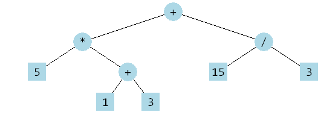
V tomto strome sú vo všetkých vnútorných vrcholoch nejaké aritmetické operácie a v listoch sú nejaké čísla (zrejme operandy). Strom na obrázku by mohol zodpovedať takémuto aritmetickému výrazu:
5 * (1 + 3) + 15 / 3
Hoci vo výraze, ktorý je uložený v tomto strome, nie sú žiadne zátvorky, vy si ich viete na správnych miestach domyslieť. Takýmto stromom budeme hovoriť aritmetické stromy. Môžete ich nájsť aj pod názvom binary expression tree, čiastočne aj ako parse tree.
Môžeme zhrnúť základné vlastnosti takýchto stromov:
vo vnútorných vrcholoch sa nachádzajú reťazce binárnych operácií, napríklad
'+','-','*','/', ale môže tu byť aj'**'alebo'and', … ak vieme popísať ich spôsob vyhodnocovaniav listoch sú operandy binárnych operácií, najčastejšie sú to celé alebo desatinné čísla, ale mohli by tu byť aj znakové reťazce, ktoré by mohli reprezentovať mená premenných
Takéto aritmetické stromy vieme veľmi jednoducho vyhodnocovať:
nájdeme operáciu (vnútorný vrchol), ktorej oba potomkovia sú už vyhodnotené operandy (listy stromu alebo už vyhodnotené podstromy), v našom príklade je to podstrom
1 + 3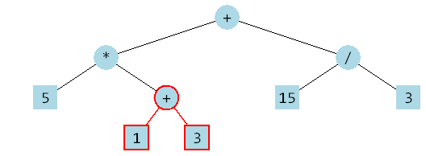
vyhodnotí sa táto operácia a celý tento podstrom dostáva hodnotu, ktorá je výsledkom tejto operácie, teda číslo
4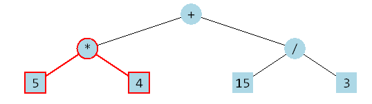
teraz sa môže vyhodnocovať aj operácia
'*', lebo ľavým operandom je číslo5a pravým je hodnota pravého podstromu4- výsledkom je teda číslo20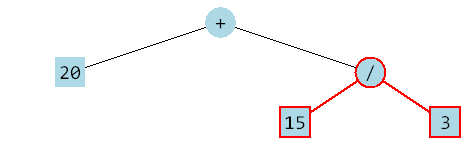
ďalšou operáciou je
/, teda podstrom15 / 3- táto operácia sa vyhodnotí a výsledkom podstromu je hodnota5(tu to môžeme chápať ako celočíselné delenie)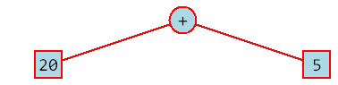
na záver sa vyhodnotí operácia
'+', ktorá je v koreni celého stromu, lebo už poznáme hodnoty oboch jej podstromov, teda20z ľavého podstromu a5z pravého - vyhodnotením dostávame výsledok pre celý strom, teda25
{kind=link}
{kind=link}
{kind=link}
{kind=link}
{kind=link}
Uvedomte si, že v skutočnosti sa takýmto vyhodnocovaním aritmetický strom nemodifikuje - ten ostáva bez zmeny. Takto len ilustrujeme postup vyhodnocovania.
Celý tento postup môžeme zapísať rekurzívnou metódou vyhodnot() do definície triedy AritmetickyStrom:
class AritmetickyStrom:
class Vrchol:
def __init__(self, data, left=None, right=None):
self.data, self.left, self.right = data, left, right
def __init__(self):
self.root = None
def vyhodnot(self):
def hodnota(vrch):
if vrch is None:
raise SyntaxError
if vrch.left is None and vrch.right is None:
return vrch.data
hodn1 = hodnota(vrch.left)
hodn2 = hodnota(vrch.right)
if vrch.data == '+':
return hodn1 + hodn2
if vrch.data == '-':
return hodn1 - hodn2
if vrch.data == '*':
return hodn1 * hodn2
if vrch.data == '/':
return hodn1 // hodn2
raise SyntaxError
return hodnota(self.root)
Keďže zatiaľ nevieme vytvoriť aritmetický strom inak ako priamym priradením vrcholov do koreňa stromu (root), musíme to otestovať takto:
>>> v = AritmetickyStrom.Vrchol
>>> s = AritmetickyStrom()
>>> s.root = v('+', v('*', v(5), v('+', v(1), v(3))), v('/', v(15), v(3)))
>>> print('vyhodnotenie =', s.vyhodnot())
vyhodnotenie = 25
Zaujímavý výsledok dostávame, keď z aritmetického stromu vypíšeme jeho preorder, inorder a postorder postupnosti (skopírujeme ich a mierne zmodifikujeme z predchádzajúcej prednášky):
>>> s.preorder()
'+ * 5 + 1 3 / 15 3'
>>> s.inorder()
'5 * 1 + 3 + 15 / 3'
>>> s.postorder()
'5 1 3 + * 15 3 / +'
Dostávame nám známe zápisy prefix, infix a postfix. Hoci asi nie je problém upraviť metódu inorder() tak, aby každý podvýraz (podstrom) ozátvorkovala, napríklad takto:
>>> s.inorder()
'((5 * (1 + 3)) + (15 / 3))'
Tento reťazec by sme prekopírovaním (copy-paste) vedeli nechať vyhodnotiť aj Pythonu:
>>> ((5 * (1 + 3)) + (15 / 3))
25.0
Prefixový strom - Trie¶
je stromová dátová štruktúra, v ktorej uchovávame nejakú zadanú množinu reťazcov. Predpokladáme, že v tejto množine budeme potrebovať veľmi rýchlo hľadať buď celé slová alebo ich prefixy (začiatky slov) alebo slová s daným prefixom. Táto stromová štruktúra využíva to, že sa každé takto uložené slovo rozloží na písmená a táto postupnosť písmen potom tvorí cesty ku niektorým vrcholom stromu. Tejto štruktúre sa hovorí Trie (v angličtine sa číta ako slovo „try“) ale niekedy aj prefixový, písmenkový alebo znakový strom. Dá sa nájsť aj s názvom lexikografický strom.
Každý vrchol tohto stromu má toľko podstromov, koľko rôznych písmen z tohto vrcholu pokračuje. Každá takáto hrana k podstromu je označená príslušným písmenom.
Najlepšie to vysvetlíme na takomto príklade: zostrojíme trie, ktorý bude uchovávať túto množinu slov: {bear, bell, bid, bull, buy, sell, stock, stop}.
z koreňa stromu budú vychádzať dve hrany (dva podstromy), lebo všetky slová začínajú písmenom
'b'alebo's':jeden podstrom bude obsahovať všetky slová na
'b':{bear, bell, bid, bull, buy}a druhý slová na's':{sell, stock, stop}podstrom pre
'b'bude mať toľko synov (podstromov), koľko je rôznych druhých písmen v slovách: sú to'e','i','u'takže prvý jeho podstrom bude uchovávať slová s
'e':{bear, bell}druhý slová s
'i':{bid}tretí s
'u':{bull, buy}
podobne podstrom pre prvé písmeno
's'sa bude rozvetvovať podľa druhých písmen slov{sell, stock, stop}, teda na dva podstromy'e','t':jeho prvý podstrom bude uchovávať slová, ktoré začínajú
's'a druhé písmeno je'e':{sell}druhý slová s druhým písmenom
't':{stock, stop}
takto by sme pokračovali, kým by sme nerozobrali na písmená všetky slová
Zrejme výška stromu je daná dĺžkou najdlhšieho slova, ktoré je uložené v strome, v našom prípade je to slovo 'stock', teda výška je 5. V tomto prípade všetky slová končia v listoch stromu, lebo žiadne z nich nie je prefixom nejakého iného. Toto je v niektorých aplikáciách trie podmienkou: všetky slová musia končiť v listoch stromu a teda žiadne nie je prefixom iného. Inokedy nám to nevadí a vtedy treba nejakú informáciu o tom, že nejaký vnútorný vrchol stromu je koncovým písmenkom nejakého slova. Ak by sme do tohto stromu chceli vložiť aj anglické slovo 'be', museli by sme príslušný vrchol (z ktorého pokračujú zvyšné písmená pre 'bear' a 'bell') nejako označiť (atribút s príznakom konca) alebo by sme na koniec každého slova prilepili nejaký špeciálny koncový znak napríklad '#'.
Vrchol prefixového stromu definujeme najčastejšie takto:
class Vrchol:
def __init__(self):
self.data = None
self.child = []
teda každý vrchol môže obsahovať nejakú informáciu (napríklad, že je to koncový vrchol nejakého slova) a zoznam všetkých svojich podstromov spolu s informáciou, ktorému znaku tento podstrom zodpovedá. Do zoznamu child budeme teda ukladať dvojice (znak, vrch).
Vložiť nové slovo do stromu znamená:
class Trie:
class Vrchol:
def __init__(self):
self.data = None
self.child = []
def __init__(self):
self.root = self.Vrchol()
def vloz(self, slovo, data=1):
vrch = self.root
for znak in slovo:
for znak1, vrch1 in vrch.child:
if znak1 == znak:
break
else:
vrch1 = self.Vrchol()
vrch.child.append((znak, vrch1))
vrch = vrch1
vrch.data = data
Všimnite si, vnútorný for-cyklus, ktorý má else vetvu: príkazy v tejto else vetve sa vykonajú len vtedy, keď samotný for-cyklus preverí všetky možnosti (všetky prvky zoznamu vrch.child) a všetky majú iný ako hľadaný znak. Teda else vetva vo for-cykle sa nevykoná, keď sa z cyklu vyskočí pomocou break.
Slová do stromu pridáme, napríklad takto:
t = Trie()
for slovo in 'bear bell bid bull buy sell stock stop'.split():
t.vloz(slovo)
Dostávame takýto prefixový strom:
{kind=link}
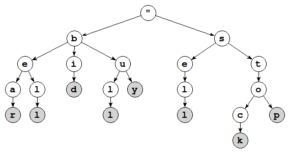
Uvedomte si, že vo vrcholoch tohto stromu sa naozaj nenachádzajú tie znaky, ktoré sú tu zobrazené. Presnejšie by bolo, keby sme ich kreslili na hrany stromu, napríklad takto:
{kind=link}
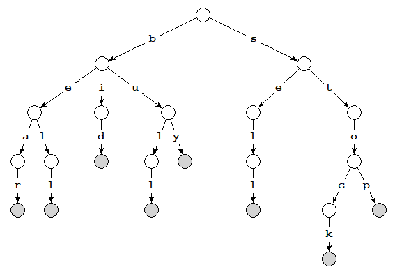
Pre jednoduchšie vykresľovanie sa častejšie volí vypisovanie znakov vo vrcholoch stromu.
Pomocou rekurzívnej funkcie vieme vygenerovať všetky uložené slová v takomto strome:
class Trie:
...
def all(self, vrch, slovo=''):
if vrch.data is not None:
yield slovo
for znak1, vrch1 in vrch.child:
yield from self.all(vrch1, slovo + znak1)
for slovo in t.all(t.root):
print(slovo)
Vieme z toho urobiť iterátor:
class Trie:
...
def __iter__(self):
return self.all(self.root)
teraz môžeme získať všetky slová z tohto stromu:
list(t)
alebo vypísať:
print(*t)
Vďaka prefixovému stromu vieme veľmi jednoducho získať všetky slová, ktoré majú zadaný prefix:
class Trie:
...
def prefix(self, slovo):
vrch = self.root
for znak in slovo:
for znak1, vrch1 in vrch.child:
if znak1 == znak:
vrch = vrch1
break
else:
return None
return self.all(vrch, slovo)
napríklad, môžeme otestovať súbor s anglickými slovami text5.txt:
t = Trie()
with open('text5.txt') as f:
for w in f.read().split():
t.vloz(w)
print(len(list(t)))
Vidíme, že sa vytvoril trie s 67527 slovami. Môžeme experimentovať s hľadaním všetkých slov, ktoré majú rovnaký nejaký prefix, napríklad:
>>> print(*t.prefix('tree'))
tree treehopper treenail trees
>>> print(*t.prefix('trie'))
tried triennial triennium trier
>>> print(*t.prefix('pyth'))
pythagoras pythagorean pythagorism pythia pythiaceae pythian pythias
pythium pythius python pythoness pythonidae pythoninae
Cvičenie¶
Poznámka
riešenia úloh ulož do jedného súboru a odovzdaj na úlohový server https://vektor.fmph.uniba.sk/
testovací server tieto ulohy nebude testovať, vyrieš a odovzdaj ich všetky okrem tých, ktoré sú označené znakom -
prvé tri riadky súboru s riešením musia obsahovať:
# 5. cvicenie # student: Janko Hrasko # datum: 17.3.2026
zrejme ako študenta uvedieš svoje meno.
pre úlohy, v ktorých treba ručne nakresliť nejaký strom na papier, tieto kresby nemusíš ukladať do vektora
Vyhľadávacie stromy
- Zisti, či tento strom spĺňa podmienky BVS (nemusíš to programovať, stačí ručne)
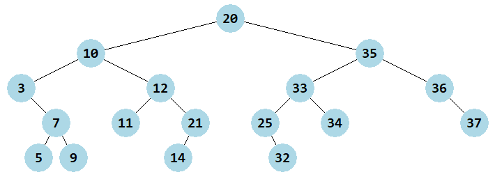
Riešenie
Nie je to BVS, lebo v ľavom podstrome je vrchol s číslom 21, ktorý by mal byť v pravom podstrome, lebo je väčší ako hodnota v koreni:
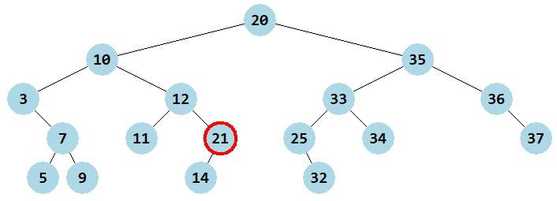
{kind=link}
{kind=link}
- Ručne nakresli strom, ktorý by vznikol postupným pridávaním do BVS týchto hodnôt:
'KE', 'BS', 'PO', 'PE', 'PK', 'BA', 'BL', 'NI', 'SC', 'BB', 'RK', 'BR'
Riešenie
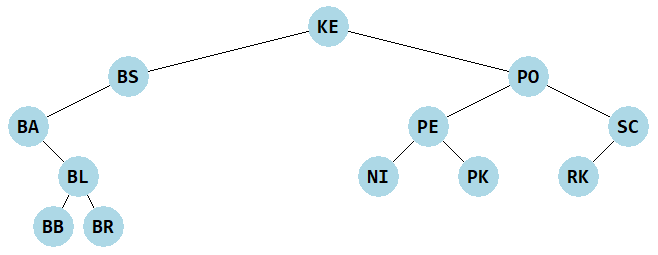
{kind=link}
- Dopíš do stromu na obrázku čísla z postupnosti
range(1, 23)tak, aby vznikol BVS: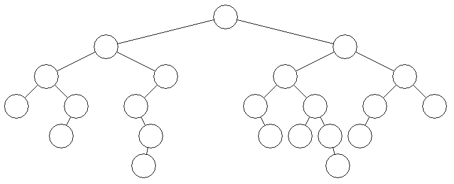
Riešenie
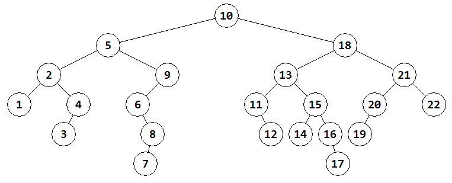
{kind=link}
{kind=link}
Vyhľadávacie stromy
Spojazdni triedu
BVSz prednášky a pridaj do nej metódu na vykreslenie stromu z predchádzajúcej prednášky. Okrem tejto metódy zapíš aj metódukontrola(), ktorá vrátiTrue, ak je binárny strom korektným binárnym vyhľadávacím stromom:import tkinter from math import inf # nekonečno class BVS: canvas = None ... def kresli(self): ... def kontrola(self): def rek(vrch, min, max): # pre všetky vrcholy plati: min < data < max if vrch is None: return True ... return rek(self.root, -inf, inf)
Prever správnosť tohto riešenia pre strom:
s = BVS() v = BVS.Vrchol s.root = v(16, v(3, v(1, None, v(2)), v(5)), v(20, v(19, v(18, v(17)), v(21)), v(23))) s.kresli() print(s.kontrola())
Zrejme by sa malo vypísať
False. Zmeň zadanie tohto stromu, aby sa vypísaloTrue.Metódu
kontrola()môžeš namiesto vnorenej rekurzívnej funkcie riešiť pomocou metódyinorder().Riešenie
Trieda
BVSz prednášky s metódo u na vykreslenie stromu:import tkinter from math import inf # nekonečno class BVS: canvas = None class Vrchol: def __init__(self, data, left=None, right=None): self.data = data self.left = left self.right = right def __init__(self): self.root = None def hladaj(self, hodnota): vrch = self.root while vrch is not None: if vrch.data == hodnota: return True if vrch.data > hodnota: vrch = vrch.left else: vrch = vrch.right return False def kresli(self): def kresli_rek(vrch, sirka, x, y): if vrch.left is not None: self.canvas.create_line(x, y, x-sirka/2, y+50) kresli_rek(vrch.left, sirka/2, x-sirka/2, y+50) if vrch.right is not None: self.canvas.create_line(x, y, x+sirka/2, y+50) kresli_rek(vrch.right, sirka/2, x+sirka/2, y+50) self.canvas.create_oval(x-20, y-20, x+20, y+20, fill='lightblue', width=0) self.canvas.create_text(x, y, text=vrch.data, font='consolas 15 bold') if self.canvas is None: BVS.canvas = tkinter.Canvas(width=600, height=400, bg='white') self.canvas.pack() self.canvas.delete('all') kresli_rek(self.root, 300, 300, 30) def kontrola(self): def rek(vrch, mn, mx): if vrch is None: return True if vrch.data <= mn or vrch.data >= mx: print(vrch.data, mn, mx) return False return rek(vrch.left, mn, vrch.data) and rek(vrch.right, vrch.data, mx) return rek(self.root, -inf, inf)
Tento test:
s = BVS() v = BVS.Vrchol s.root = v(16, v(3, v(1, None, v(2)), v(5)), v(20, v(19, v(18, v(17)), v(21)), v(23))) s.kresli() print(s.kontrola())
vypíše
Falsea vykreslí: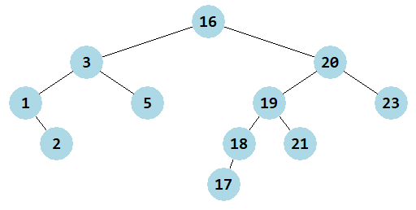
Metóda
kontrolasa dá zapísať aj takto (čo je ale výrazne menej efektívne):class BVS: ... def kontrola(self): p = list(self.inorder()) return p == sorted(p)
Zadaný strom nie je BVS (vrchol
21sa nachádza v ľavom podstrome vrchola20). Opraviť strom sa dá, napríklad takto:s.root = v(16, v(3, v(1, None, v(2)), v(5)), v(21, v(19, v(18, v(17)), v(20)), v(23)))
{kind=link}
Vylepši inicializáciu
__init__()triedyBVStak, aby mohla mať nepovinný druhý parameterpostupnost- z tejto postupnosti hodnôt vytvorí BVS (volaním metódyvloz()):class BVS: ... def __init__(self, postupnost=None): ...
Funkčnosť otestuj na strome z (2) úlohy:
s = BVS('KE BS PO PE PK BA BL NI SC BB RK BR'.split()) s.kresli()
Vytvor BVS aj z (3) úlohy.
Riešenie
class BVS: ... def __init__(self, postupnost=None): self.root = None if postupnost is not None: for hodnota in postupnost: self.vloz(hodnota) def vloz(self, hodnota): if self.root is None: self.root = self.Vrchol(hodnota) else: vrch = self.root while vrch.data != hodnota: if vrch.data > hodnota: if vrch.left is None: vrch.left = self.Vrchol(hodnota) return vrch = vrch.left else: if vrch.right is None: vrch.right = self.Vrchol(hodnota) return vrch = vrch.right
Program:
s = BVS('KE BS PO PE PK BA BL NI SC BB RK BR'.split()) s.kresli()
nakreslí obrázok z (2) úlohy.
Strom z (1) úlohy nakreslí tento program:
s = BVS((22, 10, 35, 3, 12, 33, 36, 7, 11, 21, 25, 34, 37, 5, 14, 32, 9)) s.root.data = 20 s.kresli()
Strom z (3) úlohy nakreslí tento program:
BVS((10, 5, 18, 2, 9, 13, 11, 12, 15, 14, 16, 17, 1, 4, 3, 6, 8, 7, 21, 22, 20, 19)).kresli()
Do triedy
BVSzapíš metódymin()amax(). Tieto by mali vrátiť minimálnu, resp. maximálnu hodnotu v strome. Využi vlastnosť BVS, podľa ktorej je minimálny vrchol najnižší na ceste od koreňa vľavo a maximálny vpravo:class BVS: ... def min(self): ... def max(self): ...
Otestuj, napríklad:
>>> s = BVS('KE BS PO PE PK BA BL NI SC BB RK BR'.split()) >>> s.min() 'BA' >>> s.max() 'SC'
Riešenie
class BVS: ... def min(self): vysl = self.root if vysl is None: return None while vysl.left is not None: vysl = vysl.left return vysl.data def max(self): vysl = self.root if vysl is None: return None while vysl.right is not None: vysl = vysl.right return vysl.data
Do triedy
BVSdoplň metódy generátoryinorder()apreorder()(využi predchádzajúcu prednášku):class BVS: ... def inorder(self): ... def preorder(self): ...
Prekontroluj, či inorder postupnosť vracia usporiadanú postupnosť všetkých hodnôt v strome, napríklad takto:
>>> zoz = [16, 20, 3, 21, 19, 5, 1, 23, 18, 2, 17] >>> s = BVS(zoz) >>> s.kresli() >>> list(s.inorder()) == sorted(zoz) True
Prekontroluj, či sa z preorder postupnosti nejakého BVS dá skonštruovať iný BVS, ktorý má úplne rovnaký tvar ako pôvodný:
>>> s = BVS([16, 20, 3, 21, 19, 5, 1, 23, 18, 2, 17]) >>> s.kresli() >>> zoz1 = s.preorder() >>> s1 = BVS(zoz1) >>> s1.kresli()
Oba tieto stromy by mali vyzerať rovnako.
Riešenie
class BVS: ... def inorder(self): def rek(vrch): if vrch is not None: yield from rek(vrch.left) yield vrch.data yield from rek(vrch.right) return rek(self.root) def preorder(self): def rek(vrch): if vrch is not None: yield vrch.data yield from rek(vrch.left) yield from rek(vrch.right) return rek(self.root)
Danú postupnosť hodnôt preusporiadaj tak, aby BVS, ktorý vznikne postupným pridávaním prvkov tejto preusporiadanej postupnosti, bol skoro úplný. Idea by mohla byť takáto:
usporiadaj danú postupnosť (napríklad pomocou
sorted())stredný prvok bude prvý (ďalší) vo výsledku
rekurzívne spracuj prvú polovicu (po stredný prvok)
rekurzívne spracuj druhú polovicu (od stredného prvku)
Napíš funkciu
vyrob_BVS(postupnost), ktorá z danej postupnosti vytvorí (a vráti) BVS, podľa daného návodu (a teda minimálnej výšky):def vyrob_BVS(postupnost): ... return BVS(...)
Napríklad:
>>> vyrob_BVS('KE BS PO PE PK BA BL NI SC BB RK BR SE NO SK'.split()).kresli()
nakreslí takýto BVS:
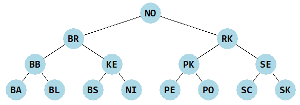
Riešenie
def vyrob_BVS(postupnost): def vyrob(post): if post == []: return [] stred = len(post) // 2 return [post[stred]] + vyrob(post[:stred]) + vyrob(post[stred+1:]) return BVS(vyrob(sorted(set(postupnost))))
Do rekurzívnej vnorenej funkcie
vyrobsa posiela usporiadaná vstupná postupnosť.set(postupnost)je tam pridaná preto, aby sa zo vstupnej postupnosti vyhodili duplikáty.
{kind=link}
Aritmetické stromy
- Ručne (na papieri) nakresli strom pre tento aritmetický výraz:
6 * 5 + 7 / (4 - 2 * 5)
Riešenie
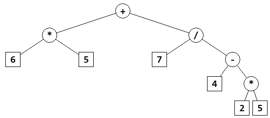
{kind=link}
- Dopíš metódy
prefix(),infix()apostfix()tak, aby vrátili znakový reťazec, pričominfix()ozátvorkuje všetky podvýrazy (podstromy), ktoré obsahujú operácie:class AritmetickyStrom: ... def prefix(self): ... def infix(self): ... def postfix(self): ...
Otestuj, napríklad:
v = AritmetickyStrom.Vrchol s = AritmetickyStrom() s.root = v('+', v('*', v(5), v('+', v(1), v(3))), v('/', v(15), v(3))) print('prefix =', s.prefix()) print('infix =', s.infix()) print('postfix =', s.postfix())
Vypíše:
prefix = + * 5 + 1 3 / 15 3 infix = ((5*(1+3))+(15/3)) postfix = 5 1 3 + * 15 3 / +
Riešenie
class AritmetickyStrom: ... def prefix(self): def prefix_rek(vrch): if vrch is None: return '' if vrch.left is None and vrch.right is None: return str(vrch.data) return str(vrch.data)+' '+prefix_rek(vrch.left)+' '+prefix_rek(vrch.right) return prefix_rek(self.root) def infix(self): def infix_rek(vrch): if vrch is None: return '' if vrch.left is None and vrch.right is None: return str(vrch.data) return '(' + infix_rek(vrch.left) + str(vrch.data) + infix_rek(vrch.right) + ')' return infix_rek(self.root) def postfix(self): def postfix_rek(vrch): if vrch is None: return '' if vrch.left is None and vrch.right is None: return str(vrch.data) return postfix_rek(vrch.left)+' '+postfix_rek(vrch.right)+' '+str(vrch.data) return postfix_rek(self.root)
Spojazdni triedu
AritmetickyStromz prednášky a doplň do nej metódu na vykresľovanie stromu:import tkinter class AritmetickyStrom: canvas = None ... def kresli(self): ...
Otestuj na príklade stromu z prednášky:
v = AritmetickyStrom.Vrchol s = AritmetickyStrom() s.root = v('+', v('*', v(5), v('+', v(1), v(3))), v('/', v(15), v(3))) print('vyhodnotenie =', s.vyhodnot()) s.kresli()
Riešenie
import tkinter class AritmetickyStrom: canvas = None class Vrchol: def __init__(self, data, left=None, right=None): self.data = data self.left = left self.right = right def __init__(self): self.root = None def vyhodnot(self): def hodnota(vrch): if vrch is None: raise SyntaxError if vrch.left is None and vrch.right is None: return vrch.data hodnota_left = hodnota(vrch.left) hodnota_right = hodnota(vrch.right) if vrch.data == '+': return hodnota_left + hodnota_right elif vrch.data == '-': return hodnota_left - hodnota_right elif vrch.data == '*': return hodnota_left * hodnota_right elif vrch.data == '/': return hodnota_left // hodnota_right else: raise SyntaxError return hodnota(self.root) def kresli(self): r = 15 def kresli_rek(vrch, sirka, x, y): if vrch.left is not None: self.canvas.create_line(x, y, x-sirka/2, y+50) kresli_rek(vrch.left, sirka/2, x-sirka/2, y+50) if vrch.right is not None: self.canvas.create_line(x, y, x+sirka/2, y+50) kresli_rek(vrch.right, sirka/2, x+sirka/2, y+50) if vrch.left is None and vrch.right is None: self.canvas.create_rectangle(x-r, y-r, x+r, y+r, fill='white', width=1) else: self.canvas.create_oval(x-r, y-r, x+r, y+r, fill='white', width=1) self.canvas.create_text(x, y, text=vrch.data, font='consolas 15 bold') if self.canvas is None: AritmetickyStrom.canvas = tkinter.Canvas(width=600, height=400, bg='white') self.canvas.pack() self.canvas.delete('all') kresli_rek(self.root, 300, 300, 50)
potom test:
v = AritmetickyStrom.Vrchol s = AritmetickyStrom() s.root = v('+', v('*', v(5), v('+', v(1), v(3))), v('/', v(15), v(3))) print('vyhodnotenie =', s.vyhodnot()) s.kresli()
vypíše:
vyhodnotenie = 25a nakreslí: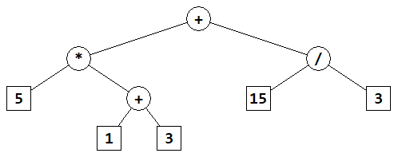
{kind=link}
Do inicializácie
__init__()dopíš parameterpostfix(znakový reťazec, ktorý obsahuje postfixový výraz - prvky sú v ňom oddelené medzerou) a metóda z tohto reťazca skonštruuje aritmetický strom (algoritmus sa podobá vyhodnocovaniu postfixu):vytvorí si pomocný zásobník
prerobí vstupný reťazec na zoznam prvkov
postupne prechádza prvky zoznamu:
ak je prvkom operácia, vyberie z vrchu zásobníka pravý aj ľavý operand, s danou operáciou poskladá malý podstrom (
Vrchol(operácia, ľavý, pravý)) a vloží ho na vrch zásobníkainak je prvkom číslo (zatiaľ je to reťazec, ktorý reprezentuje číslo), vyrobí z neho nový vrchol (
Vrchol(číslo)) a vloží ho na vrch zásobníka
po spracovaní všetkých prvkov zoznamu je na vrchu zásobníka kompletný aritmetický strom - už ho iba priradí do atribútu
root
Dopíš inicializáciu do triedy:
class AritmetickyStrom: ... def __init__(self, postfix): self.root = None ...
Otestuj, napríklad:
>>> s = AritmetickyStrom('5 1 3 + * 15 3 / +') >>> s.kresli()
Riešenie
class AritmetickyStrom: ... def __init__(self, postfix=None): self.root = None if postfix is not None: stack = [] for prvok in postfix.split(): try: stack.append(self.Vrchol(int(prvok))) except ValueError: pravy = stack.pop() lavy = stack.pop() stack.append(self.Vrchol(prvok, lavy, pravy)) self.root = stack.pop()
tento test:
s = AritmetickyStrom('5 1 3 + * 15 3 / +') s.kresli() print('vyhodnotenie =', s.vyhodnot()) print('prefix =', s.prefix()) print('infix =', s.infix()) print('postfix =', s.postfix())
vypíše:
vyhodnotenie = 25 prefix = + * 5 + 1 3 / 15 3 infix = ((5*(1+3))+(15/3)) postfix = 5 1 3 + * 15 3 / +
a nakreslí to isté ako v (10) úlohe:
Prefixové stromy
- Nakresli bez počítača prefixový strom pre množinu slov:
{pes, slon, prasa, tiger, slak, pero, prak, tuja, tik, slina, tunel}
Zisti
koľko vrcholov má tento strom
koľko je v ňom takých vnútorných vrcholov, v ktorých nekončí žiadne slovo
aký je stupeň tohto stromu
stupňom vrcholu je počet hrán, ktoré z neho vychádzajú
stupňom celého stromu je maximum zo všetkých stupňov vrcholov (binárny strom má stupeň 2)
aká množina slov vznikne pre prefix
'sl'
Riešenie
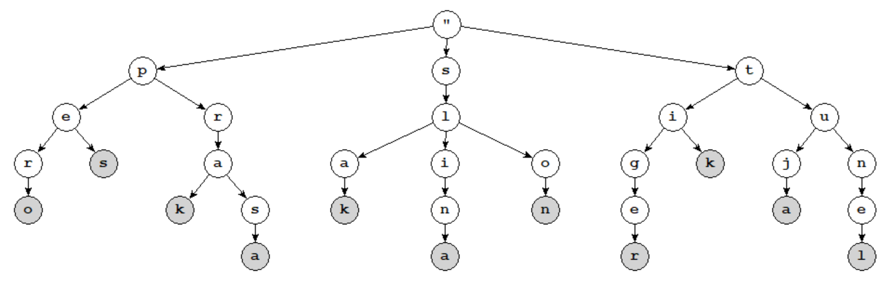
počet vrcholov stromu:
32počet vnútorných vrcholov, v ktorých nekončí žiadne slovo:
21stupeň stromu:
3množina slov, ktorá vznikne pre prefix
'sl':{slina slon slak}
{kind=link}
V triede
Triez prednášky spojazdni a otestuj tieto metódy:vlozallprefix__iter____len__
Otestuj ich na niektorých zo súborov: text1.txt, text5.txt, dobs.txt, twain.txt. Napríklad takto:
t = Trie() with open('dobs.txt', encoding='utf-8') as file: for slovo in file.read().split(): t.vloz(slovo) print(len(t)) print(len(list(t))) print(list(t.prefix('boh')))
Do triedy
Triepridaj aj metódu na vykreslenie stromu:class Trie: ... canvas = None def kresli(self, vrch=None, znak='"', width=None, x=None, y=None): def sipka(x1, y1, x2, y2, r=15, farba='black', hrubka=1): d = ((x1-x2)**2+(y1-y2)**2)**.5 xx, yy = (x2-x1)*r/d, (y2-y1)*r/d self.canvas.create_line(x1+xx, y1+yy, x2-xx, y2-yy, width=hrubka, fill=farba, arrow='last') if self.canvas is None: self.canvas = tkinter.Canvas(bg='white', width=1000, height=800) self.canvas.pack() if vrch is None: self.canvas.delete('all') vrch = self.root if width is None: width = int(self.canvas['width'])-20 if x is None: x = 10 if y is None: y = 30 n = len(vrch.child) x0 = x + width // 2 if n > 0: width1 = width // n for i, (znak1, vrch1) in enumerate(sorted(vrch.child)): sipka(x0, y, x+i*width1+width1//2, y + 50) self.kresli(vrch1, znak1, width1, x+i*width1, y + 50) f = 'white' if vrch.data is None else 'lightgray' self.canvas.create_oval(x0-15, y-15, x0+15, y+15, fill=f) self.canvas.create_text(x0, y, text=znak, font='courier 12 bold') if vrch is self.root: self.canvas.update() self.canvas.after(500)
Môžeš otestovať, napríklad pre slová z úlohy (14):
t = Trie() for slovo in ... slová z úlohy (6) ... : t.vloz(slovo) t.kresli() while slovo: slovo = input('zadaj slovo: ') t.vloz(slovo) t.kresli()
Riešenie
import tkinter class Trie: canvas = None class Vrchol: def __init__(self): self.data = None self.child = [] def __init__(self): self.root = self.Vrchol() def vloz(self, slovo, data=1): vrch = self.root for znak in slovo: for znak1, vrch1 in vrch.child: if znak1 == znak: break else: vrch1 = self.Vrchol() vrch.child.append((znak, vrch1)) vrch = vrch1 vrch.data = data #self.kresli() def __len__(self): def rek(vrch): vysl = int(vrch.data is not None) for znak1, vrch1 in vrch.child: vysl += rek(vrch1) return vysl return rek(self.root) def all(self, vrch, slovo=''): if vrch.data is not None: yield slovo for znak1, vrch1 in vrch.child: yield from self.all(vrch1, slovo + znak1) def __iter__(self): return self.all(self.root) def prefix(self, slovo): vrch = self.root for znak in slovo: for znak1, vrch1 in vrch.child: if znak1 == znak: vrch = vrch1 break else: return None return self.all(vrch, slovo) def kresli(self, vrch=None, znak='"', width=None, x=None, y=None): def sipka(x1, y1, x2, y2, r=15, farba='black', hrubka=1): d = ((x1-x2)**2+(y1-y2)**2)**.5 xx, yy = (x2-x1)*r/d, (y2-y1)*r/d self.canvas.create_line(x1+xx, y1+yy, x2-xx, y2-yy, width=hrubka, fill=farba, arrow='last') if self.canvas is None: self.canvas = tkinter.Canvas(bg='white', width=1000, height=800) self.canvas.pack() if vrch is None: self.canvas.delete('all') vrch = self.root if width is None: width = int(self.canvas['width'])-20 if x is None: x = 10 if y is None: y = 30 n = len(vrch.child) x0 = x + width // 2 if n > 0: width1 = width // n for i, (znak1, vrch1) in enumerate(sorted(vrch.child)): sipka(x0, y, x+i*width1+width1//2, y + 50) self.kresli(vrch1, znak1, width1, x+i*width1, y + 50) f = 'white' if vrch.data is None else 'lightgray' self.canvas.create_oval(x0-15, y-15, x0+15, y+15, fill=f) self.canvas.create_text(x0, y, text=znak, font='courier 12 bold') if vrch is self.root: self.canvas.update() self.canvas.after(500)
5. Týždenný projekt¶
Poznámka
riešenie úlohy ulož do textového súboru s príponou
.pya odovzdaj na testovací server https://vektor.fmph.uniba.sk/prvé tri riadky súboru s riešením musia obsahovať:
# 5. tyzdenny projekt # student: Janko Hraško # datum: 27.3.2026
zrejme ako študenta uvedieš svoje meno, dátum uprav podľa dátumu odovzdania
nepoužívaj
importaniglobal
Implementuj triedu Dictionary, ktorá sa bude správať podobne ako asociatívne pole. Kľúčmi budú len znakové reťazce a budú sa ukladať do prefixového stromu a asociovaná hodnota sa potom priradí do príslušného vrcholu stromu (atribút value).
Na riešenie úlohy použi tieto deklarácie:
class Dictionary:
class Node:
def __init__(self, value=None): # vrchol prefixového stromu
self.value = value
self.child = None # spájaný zoznam typu Child - spájaný zoznam podstromov
class Child:
def __init__(self, char, node=None, next=None):
self.char = char
self.node = node # podstrom typu Node
self.next = next # nasledovný prvok spájaného zoznamu
def __init__(self, seq=None):
self.root = None # prázdny strom
... # inicializuje strom
...
Prefixový strom bude uchovávať v každom vrchole (typu Node) informácie o podstromoch: tie budú v spájaných zoznamoch typu Child (na rozdiel od pythonovských zoznamoch typu list, ktoré boli v prednáške).
Metódy by sa mali väčšinou správať veľmi podobne ako pre pythonovský typ dict:
__init__(seq=None)pomocou postupnosti dvojícseqsa strom inicializujeparametrom
seqje buď postupnosť dvojíc(key, value)alebo nejaký slovník, teda hodnota typudict
__contains__(key)zistí, či sa daný kľúč nachádza v strome__len__()vráti počet kľúčov__setitem__(key, value)pre daný kľúč priradí príslušnú hodnotu (zrejme hodnota bude vždy rôzna odNone)__getitem__(key)pre daný kľúč vráti príslušnú hodnotu, resp. vyvolá chybuKeyError, ak taký kľúč neexistuje__delitem__(key)vymaže daný kľúč (resp. vyvolá chybuKeyError), do atribútuvaluepriradíNonemetóda nemení počet vrcholov v strome
__iter__()vráti generator všetkých kľúčov v strome, zrejme tieto kľúče môže vrátiť v ľubovoľnom poradíkeys(),values(),items()vrátia generátory všetkých kľúčov, hodnôt a dvojíc(kľúč, hodnota)v strome (s prvkami v ľubovoľnom poradí) podobne, ako pre asociatívne poliapop(key)vráti príslušnú hodnotu, pričom kľúč zo stromu vyhodí; ak kľúč neexistoval, vyvolá chybuKeyErrorget(key, default=None)pre daný kľúč vráti príslušnú hodnotu, resp. vráti hodnotudefault, ak taký kľúč neexistujedict()vráti celý strom ako slovník, teda hodnotu typudictnode_count()vráti počet vrcholov (typuNode) v celom prefixovom strome: prázdny strom má tento počet0, strom s jediným kľúčom''má tento počet1, strom s jediným kľúčom, napríklad'a', má tento počet2(aj strom s dvoma kľúčmi''a'a'má tento počet2), atď.
Vnorené triedy Dictionary.Node a Dictionary.Child nemeň (testovač aj tak použije ich pôvodnú verziu). Vrcholy v strome, ktoré nereprezentujú kľúč, budú mať v atribúte Node.value hodnotu None.
V inštancii triedy Dictionary nepoužívaj žiadne ďalšie attibúty okrem root. Môžeš ale definovať nejaké pomocné metódy.